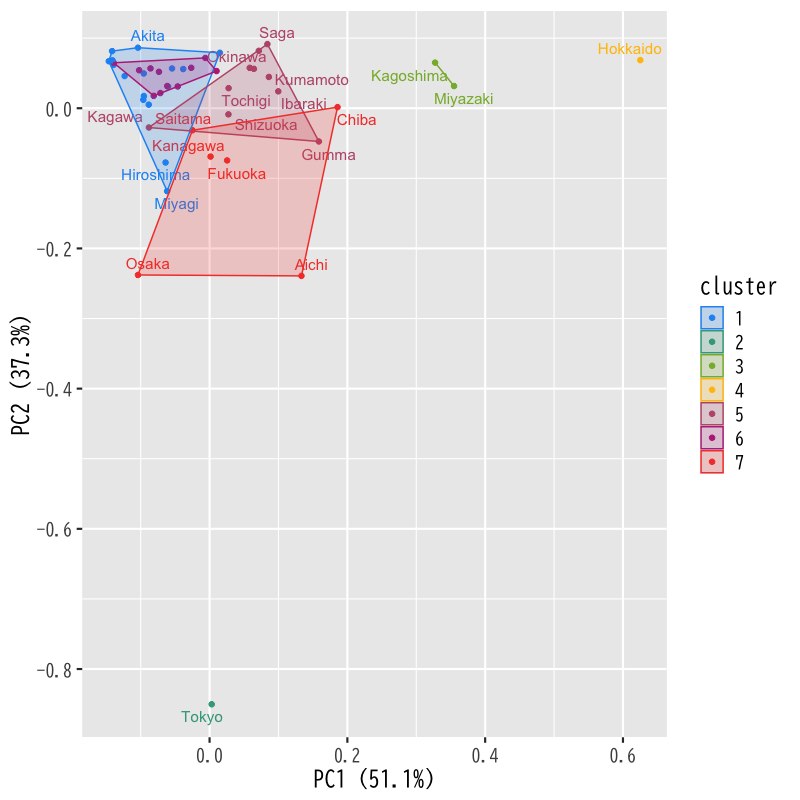
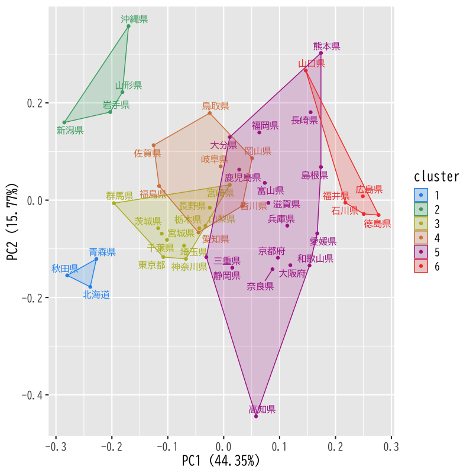
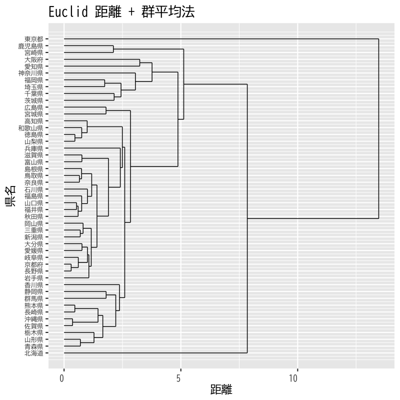
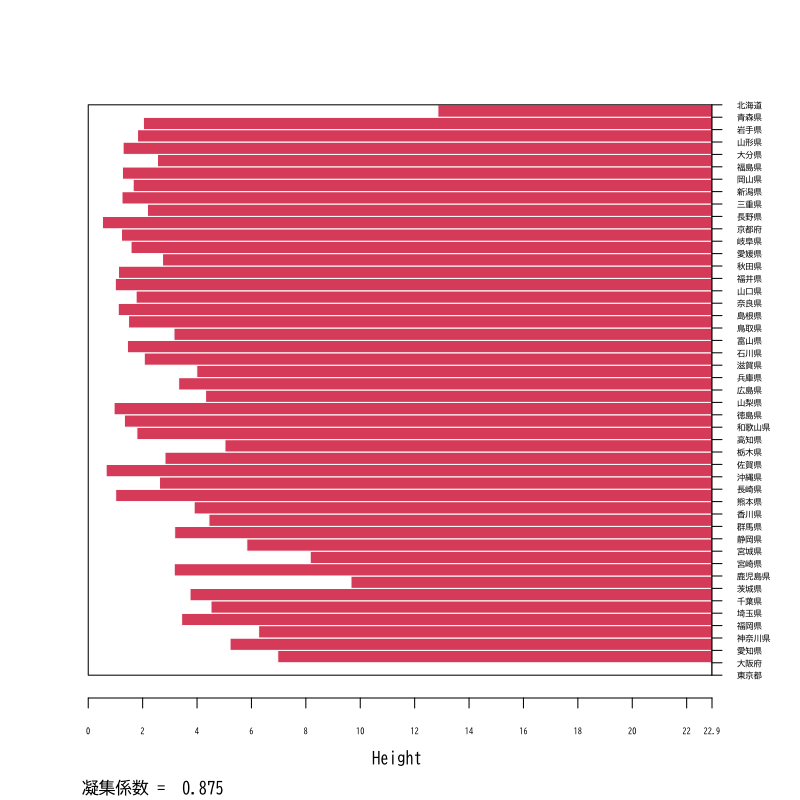
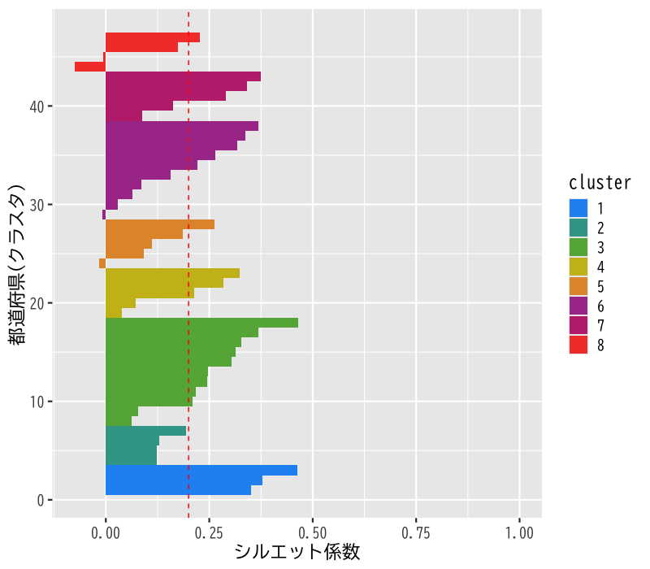

クラスタ分析
非階層的方法と分析の評価
(Press ? for help, n and p for next and previous slide)
今週の内容
- 第1日: クラスタ分析の考え方と階層的方法
- 第2日: 非階層的方法と分析の評価
クラスタ分析の復習
クラスタ分析
cluster analysis
個体の間に隠れている 集まり=クラスタ を個体間の“距離”にもとづいて発見する方法
- 個体間の類似度・距離(非類似度)を定義:
- 同じクラスタに属する個体どうしは似通った性質
- 異なるクラスタに属する個体どうしは異なる性質
- さらなるデータ解析やデータの可視化に利用
- 教師なし学習の代表的な手法の一つ
クラスタ分析の考え方
- 階層的方法:
- データ点およびクラスタの間に 距離 を定義
- 距離に基づいてグループ化:
- 近いものから順にクラスタを 凝集
- 近いものが同じクラスタに残るように 分割
- 非階層的方法:
- クラスタの数を事前に指定
- クラスタの 集まりの良さ を評価する損失関数を定義
- 損失関数を最小化するようにクラスタを形成
階層的方法における凝集的手続き
- データ・クラスタ間の距離を定義
- データ点間の距離
- クラスタ間の距離
- データ点およびクラスタ間の距離を計算
- 最も近い2つを統合し新たなクラスタを形成
- クラスタ数が1つになるまで2-3の手続きを繰り返す

Figure 1: 凝集的手続きの例
非階層的方法
非階層的方法の手続き
- 対象の変数: \(\boldsymbol{X}=(X_1,X_2,\dotsc,X_p)^{\mathsf{T}}\) (\(p\)次元)
観測データ: \(n\) 個の個体の組
\begin{equation} \{\boldsymbol{x}_{i}\}_{i=1}^{n} = \{(x_{i1},x_{i2},\dotsc,x_{ip})^{\mathsf{T}}\}_{i=1}^{n} \end{equation}個体とクラスタの対応 \(C\) を推定:
\begin{equation} C(i) =\text{(個体 $i$ が属するクラスタ番号)} \end{equation}- 対応 \(C\) の 全体の良さ を評価する損失関数を設定
- 観測データ \(\{\boldsymbol{x}_{i}\}_{i=1}^{n}\) に最適な対応 \(\{C(i)\}_{i=1}^{n}\) を決定
\(k\)-平均法の損失関数
- クラスタの個数 \(k\) を指定
2つの個体 \(i,i'\) の 近さ=損失 を距離の二乗で評価
\begin{equation} \|\boldsymbol{x}_i-\boldsymbol{x}_{i'}\|^2 = \sum_{j=1}^p(x_{ij}-x_{i'j})^2 \end{equation}損失関数 \(W(C)\): クラスタ内の平均の近さを評価
\begin{equation} W(C) = \sum_{l=1}^k\frac{1}{n_l}\sum_{i:C(i)=l}\sum_{i':C(i')=l}\|\boldsymbol{x}_i-\boldsymbol{x}_{i'}\|^2 \end{equation}
\(k\)-平均法の性質
クラスタ \(l\) に属する個体の平均:
\begin{equation} \bar{\boldsymbol{x}}_l = \frac{1}{n_l}\sum_{i:C(i)=l}\boldsymbol{x}_i \end{equation}損失関数 \(W(C)\) の等価な表現:
\begin{equation} W(C) = 2\sum_{l=1}^k\sum_{i:C(i)=l}\|\boldsymbol{x}_i-\bar{\boldsymbol{x}}_{l}\|^2 \end{equation}- 最適な対応 \(C\): クラスタ内変動の総和が最小
演習
問題
- 以下の問に答えなさい．
損失関数 \(W(C)\) の等価な表現を示しなさい
\begin{align} W(C) &= \sum_{l=1}^k\frac{1}{n_l}\sum_{i:C(i)=l}\sum_{i':C(i')=l}\|\boldsymbol{x}_i-\boldsymbol{x}_{i'}\|^2\\ &= 2\sum_{l=1}^k\sum_{i:C(i)=l}\|\boldsymbol{x}_i-\bar{\boldsymbol{x}}_{l}\|^2 \end{align}以下の\(\hat{\boldsymbol{\mu}}\)を求めなさい
\begin{equation} \hat{\boldsymbol{\mu}} =\arg\min_{\mu} \sum_{i:C(i)=l}\|\boldsymbol{x}_i-\boldsymbol{\mu}\|^2 \end{equation}
解答例
対称性に注意して標本平均のまわりで展開
\begin{align} &\sum_{l=1}^k\frac{1}{n_l}\sum_{i:C(i)=l}\sum_{i':C(i')=l} \|\boldsymbol{x}_i-\boldsymbol{x}_{i'}\|^2\\ &= \sum_{l=1}^k\frac{1}{n_l}\sum_{i:C(i)=l}\sum_{i':C(i')=l} \|\boldsymbol{x}_i-\bar{\boldsymbol{x}}_{l}+\bar{\boldsymbol{x}}_{l}-\boldsymbol{x}_{i'}\|^2\\ &= \sum_{l=1}^k\frac{2}{n_l}\sum_{i:C(i)=l}\sum_{i':C(i')=l} \|\boldsymbol{x}_i-\bar{\boldsymbol{x}}_{l}\|^2\\ &\quad- \sum_{l=1}^k\frac{2}{n_l}\sum_{i:C(i)=l}\sum_{i':C(i')=l} (\boldsymbol{x}_i-\bar{\boldsymbol{x}}_{l})^{\mathsf{T}} (\boldsymbol{x}_{i'}-\bar{\boldsymbol{x}}_{l}) \end{align}
中心化したデータの標本平均が0であることを利用
\begin{align} &= 2\sum_{l=1}^k\sum_{i:C(i)=l} \|\boldsymbol{x}_i-\bar{\boldsymbol{x}}_{l}\|^2\\ &\quad- \sum_{l=1}^k\frac{2}{n_l} \sum_{i:C(i)=l}(\boldsymbol{x}_i-\bar{\boldsymbol{x}}_{l})^{\mathsf{T}} \sum_{i':C(i')=l}(\boldsymbol{x}_{i'}-\bar{\boldsymbol{x}}_{l})\\ &= 2\sum_{l=1}^k\sum_{i:C(i)=l} \|\boldsymbol{x}_i-\bar{\boldsymbol{x}}_{l}\|^2 \end{align}
以下の不等式が成立
\begin{align} \sum_{i:C(i)=l}\|\boldsymbol{x}_{i}-\boldsymbol{\mu}\|^{2} &= \sum_{i:C(i)=l} \|\boldsymbol{x}_{i}-\bar{\boldsymbol{x}}_{l} + \bar{\boldsymbol{x}}_{l}-\boldsymbol{\mu}\|^{2}\\ &= \sum_{i:C(i)=l} \|\boldsymbol{x}_{i}-\bar{\boldsymbol{x}}_{l}\|^{2} + \sum_{i:C(i)=l} \|\bar{\boldsymbol{x}}_{l}-\boldsymbol{\mu}\|^{2}\\ &\quad+ 2\sum_{i:C(i)=l} (\boldsymbol{x}_{i}-\bar{\boldsymbol{x}}_{l})^{\mathsf{T}} (\bar{\boldsymbol{x}}_{l}-\boldsymbol{\mu})\\ &= \sum_{i:C(i)=l} \|\boldsymbol{x}_{i}-\bar{\boldsymbol{x}}_{l}\|^{2} + n_{l}\|\bar{\boldsymbol{x}}_{l}-\boldsymbol{\mu}\|^{2}\\ &\ge \sum_{i:C(i)=l} \|\boldsymbol{x}_{i}-\bar{\boldsymbol{x}}_{l}\|^{2} \end{align}
等号の成立の条件より
\begin{equation} \hat{\boldsymbol{\mu}} =\arg\min_{\mu} \sum_{i:C(i)=l}\|\boldsymbol{x}_i-\boldsymbol{\mu}\|^2 =\bar{\boldsymbol{x}}_{l} \end{equation}クラスタの標本平均を中心とすればよい
近似的な最適化
クラスタ対応の最適化
- 最適化: 損失関数 \(W(C)\) を最小とする \(C\) を決定
- 貪欲な \(C\) の探索:
- 原理的には全ての値を計算すればよい
- 可能な \(C\) の数: \(k^n\) 通り (有限個のパターン)
- サンプル数 \(n\) が小さくない限り実時間での実行は不可能
- 近似的な \(C\) の探索:
- いくつかのアルゴリズムが提案されている
基本的な考え方: Lloyd-Forgyのアルゴリズム
標本平均と変動の平方和の性質を利用
\begin{equation} \bar{\boldsymbol{x}}_l =\arg\min_{\mu} \sum_{i:C(i)=l}\|\boldsymbol{x}_i-\boldsymbol{\mu}\|^2 \quad \text{(クラスタ\(l\)の標本平均)} \end{equation}
Lloyd-Forgyのアルゴリズム
- クラスタ中心の初期値 \(\boldsymbol{\mu}_1,\boldsymbol{\mu}_2,\dots,\boldsymbol{\mu}_k\) を与える
各データの所属クラスタ番号 \(C(i)\) を求める
\begin{equation} C(i) = \arg\min_l\|\boldsymbol{x}_i-\boldsymbol{\mu}_l\| \end{equation}各クラスタ中心 \(\boldsymbol{\mu}_l\;(l=1,2,\dotsc,k)\) を更新する
\begin{equation} \boldsymbol{\mu}_l = \frac{1}{n_l}\sum_{i:C(i)=l}\boldsymbol{x}_i, \quad n_l=|\{\boldsymbol{x}_i|C(i)=l\}| \end{equation}- 中心が変化しなくなるまで 2,3 を繰り返す
アルゴリズムの性質
- 結果は確率的
- 初期値 \(\boldsymbol{\mu}_1,\boldsymbol{\mu}_2,\dots,\boldsymbol{\mu}_k\) に依存
- アルゴリズムの成否は確率的
(最適解が得られない場合もある)
- 一般には複数の初期値をランダムに試して損失を最小とする解を採用する
平均の代わりにメドイド (medoid; 中心にある観測値) を用いる方法もある
\begin{equation} \boldsymbol{x}^{medoid}_{l} =\arg\min_{\boldsymbol{x}_{i}} \sum_{i':C(i')=l} \|\boldsymbol{x}_{i}-\boldsymbol{x}_{i'}\|^2 \end{equation}
事例
都道府県別好きなおむすびの具(一部)での例

Figure 2: 非階層的クラスタリング

Figure 3: Lloyd-Forgyのアルゴリズム (その1)

Figure 4: Lloyd-Forgyのアルゴリズム (その2)

Figure 5: Lloyd-Forgyのアルゴリズム (その3)

Figure 6: Lloyd-Forgyのアルゴリズム (その4)

Figure 7: Lloyd-Forgyのアルゴリズム (その5)
Figure 8: Lloyd-Forgyのアルゴリズム (その6)

Figure 9: クラスタリングの結果
解析事例
都道府県別の社会生活統計指標
データの属性
- Forest: 森林面積割合 (%) 2014年
- Agri: 就業者１人当たり農業産出額(販売農家）(万円) 2014年
- Ratio: 全国総人口に占める人口割合 (%) 2015年
- Land: 土地生産性（耕地面積１ヘクタール当たり）(万円) 2014年
- Goods: 商業年間商品販売額［卸売業＋小売業］（事業所当たり）(百万円) 2013年
- 平均0，分散1に正規化して解析
ユークリッド距離 + k-平均法
<< cluster 1 >> [1] "岩手県" "宮城県" "秋田県" "山形県" "福島県" "新潟県" "富山県" "石川県" [9] "福井県" "三重県" "滋賀県" "兵庫県" "島根県" "岡山県" "広島県" "山口県" << cluster 2 >> [1] "東京都" << cluster 3 >> [1] "宮崎県" "鹿児島県" << cluster 4 >> [1] "北海道" << cluster 5 >> [1] "青森県" "茨城県" "栃木県" "群馬県" "静岡県" "香川県" "佐賀県" "長崎県" [9] "熊本県" "沖縄県" << cluster 6 >> [1] "山梨県" "長野県" "岐阜県" "京都府" "奈良県" "和歌山県" [7] "鳥取県" "徳島県" "愛媛県" "高知県" "大分県" << cluster 7 >> [1] "埼玉県" "千葉県" "神奈川県" "愛知県" "大阪府" "福岡県"

Figure 10: ユークリッド距離 + k-平均法
ユークリッド距離 + k-メドイド法
<< cluster 1 >> [1] "北海道" << cluster 2 >> [1] "青森県" "栃木県" "群馬県" "静岡県" "佐賀県" "長崎県" [7] "熊本県" "宮崎県" "鹿児島県" "沖縄県" << cluster 3 >> [1] "岩手県" "宮城県" "山形県" "新潟県" "長野県" "岐阜県" "三重県" "京都府" [9] "兵庫県" "鳥取県" "岡山県" "広島県" "香川県" "愛媛県" "大分県" << cluster 4 >> [1] "秋田県" "福島県" "富山県" "石川県" "福井県" "滋賀県" "奈良県" "島根県" [9] "山口県" << cluster 5 >> [1] "茨城県" "埼玉県" "千葉県" "神奈川県" "愛知県" "大阪府" "福岡県" << cluster 6 >> [1] "東京都" << cluster 7 >> [1] "山梨県" "和歌山県" "徳島県" "高知県"

Figure 11: ユークリッド距離 + k-メドイド法
都道府県別好きなおむすびの具
データの属性
Q2. おむすびの具では何が一番好きですか？ A.梅 B.鮭 C.昆布 D.かつお E.明太子 F.たらこ Ｇ.ツナ H.その他 【回答者数】 男性 9,702人 32.0% 女性 20,616人 68.0% 総数 30,318人 100.0%に対する回答を県別に集計
Hellinger距離を利用
\(\boldsymbol{p},\boldsymbol{q}\) を確率ベクトルとして 定義される確率分布の距離
\begin{equation} d_{hel}(\boldsymbol{p},\boldsymbol{q}) = \frac{1}{\sqrt{2}}d_{euc}(\sqrt{\boldsymbol{p}},\sqrt{\boldsymbol{q}}) \end{equation}
Hellinger距離 + k-メドイド法
<< cluster 1 >> [1] "北海道" "青森県" "秋田県" << cluster 2 >> [1] "岩手県" "山形県" "新潟県" "沖縄県" << cluster 3 >> [1] "宮城県" "茨城県" "栃木県" "群馬県" "埼玉県" "千葉県" [7] "東京都" "神奈川県" "山梨県" "長野県" "宮崎県" << cluster 4 >> [1] "福島県" "岐阜県" "愛知県" "鳥取県" "岡山県" "香川県" "佐賀県" << cluster 5 >> [1] "富山県" "静岡県" "三重県" "滋賀県" "京都府" "大阪府" [7] "兵庫県" "奈良県" "和歌山県" "島根県" "愛媛県" "高知県" [13] "福岡県" "長崎県" "熊本県" "大分県" "鹿児島県" << cluster 6 >> [1] "石川県" "福井県" "広島県" "山口県" "徳島県"

Figure 12: Hellinger距離 + k-メドイド法
クラスタ構造の評価
階層的方法の評価
- 評価の対象
データ \(\boldsymbol{x}_i\) と最初に統合されたクラスタ \(C\) の距離:
\begin{equation} d_i = D({\boldsymbol{x}_i},C) \end{equation}最後に統合された2つのクラスタ \(C',C''\) の距離:
\begin{equation} D = D(C',C'') \end{equation}
凝集係数 (agglomerative coefficient):
\begin{equation} AC = \frac{1}{n}\sum_{i=1}^{n}\left(1-\frac{d_i}{D}\right) \end{equation}
凝集係数の性質
定義より
\begin{equation} 0\le AC\le 1 \end{equation}- 1に近いほどクラスタ構造が明瞭
- banner plot の面積比として視覚化
(banner plot: \(1-{d_i}/{D}\) をデータ毎に並べた棒グラフ)
非階層的方法の評価
- 評価の対象
\(\boldsymbol{x}_i\) を含むクラスタ \(C^1\) と \(\boldsymbol{x}_i\) の距離:
\begin{equation} d^1_i=D({\boldsymbol{x}_i},C^1\setminus{\boldsymbol{x}_i}) \end{equation}一番近いクラスタ \(C^2\) と \(\boldsymbol{x}_i\) の距離:
\begin{equation} d^2_i=D({\boldsymbol{x}_i},C^2) \end{equation}
シルエット係数 (silhouette coefficient):
\begin{equation} S_i = \frac{d^2_i-d^1_i}{\max(d^1_i,d^2_i)} \end{equation}
シルエット係数の性質
定義より
\begin{equation} -1\le S_i\le 1 \end{equation}- 1に近いほど適切なクラスタリング
- 全体の良さを評価するには \(S_i\) の平均を用いる
- 距離の計算を適切に行えば階層的方法でも利用可
演習
問題
- 以下の問に答えなさい．
群平均法において凝集係数が以下を満たすことを示しなさい
\begin{equation} 0\le AC\le 1 \end{equation}シルエット係数が以下を満たすことを示しなさい
\begin{equation} -1\le S_i\le 1 \end{equation}
解答例
2つのクラスタ\(C_{a},C_{b}\)が最も近いとする
\begin{equation} D(C_{c},C_{d})\ge D(C_{a},C_{b}), \quad\forall c,d \end{equation}
統合して計算される距離では下が成立
\begin{align} D(C_{a}+C_{b}, C_{c}) &= \frac{|C_{a}|D(C_{a},C_{c})+|C_{b}|D(C_{b},C_{c})}{|C_{a}|+|C_{b}|}\\ &\ge \frac{|C_{a}|D(C_{a},C_{b})+|C_{b}|D(C_{a},C_{b})}{|C_{a}|+|C_{b}|}\\ &=D(C_{a},C_{b}) \end{align}統合した結果，それより短い距離が現れることはない
以上より
\begin{equation} 0\le d_{i}\le D \end{equation}\begin{equation} 0\le 1-\frac{d_i}{D}\le 1 \end{equation}よって
\begin{equation} 0\le AC\le 1 \end{equation}
非負値の大小関係に注意する
\begin{equation} -\max(d^{1}_{i},d^{2}_{i})\le d^{2}_{i}-d^{1}_{i}\le\max(d^{1}_{i},d^{2}_{i}) \end{equation}より
\begin{equation} -1\le S_i\le 1 \end{equation}
解析事例
都道府県別の社会生活統計指標
- 凝集係数を用いて階層的方法の距離を検討
- ユークリッド距離とマンハッタン距離を比較
- 正規化は共通 (平均0，絶対偏差1)
- クラスタ距離は群平均法

Figure 13: 凝集係数 (ユークリッド距離)

Figure 14: デンドログラム (ユークリッド距離)

Figure 15: 凝集係数 (マンハッタン距離)
Figure 16: デンドログラム (マンハッタン距離)
- 一部のデータの距離が大きいと凝集係数は大きくなりがち (理由を考えてみよう)
北海道，東京，宮崎，鹿児島を除いて再計算する
凝集係数 (ユークリッド距離) [1] 0.8069585 凝集係数 (マンハッタン距離) [1] 0.7815715
都道府県別好きなおむすびの具
- シルエット係数を用いて非階層的方法のクラスタ数を検討
- データ距離はHellinger距離
- クラスタ距離は群平均法
クラスタ数を4-10として比較
シルエット係数 k = 4 [1] 0.1723566 k = 5 [1] 0.1516094 k = 6 [1] 0.175647 k = 7 [1] 0.1996024 k = 8 [1] 0.2037189 k = 9 [1] 0.2064451 k = 10 [1] 0.1948242

Figure 17: シルエット係数 (k=7)

Figure 18: シルエット係数 (k=8)
Figure 19: シルエット係数 (k=9)

Figure 20: 非階層的クラスタリング (k=8)
次週の予定
- 第1日: 時系列の基本モデル
- 第2日: モデルの推定と予測